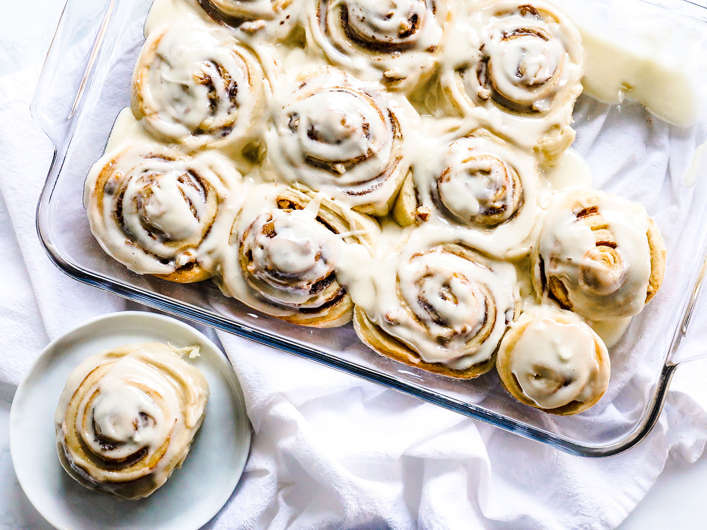

Cinnamon rolls are the perfect pastry to get you in the spring mood. They are fluffy and sweet with a light icing to help welcome the warm weather.
Recipe - Cinnamon Rolls
Ingredients
Dough

1 cup whole milk warmed (105-140°)
2 packages (or 5 teaspoons) active dry yeast
1/2 cup granulated sugar
5 cups all-purpose flour separated (plus extra for rolling out the dough)
3 large eggs room temperature
1/2 cup unsalted butter room temperature, cut into chunks
2 teaspoons fine sea salt
Filling and Glaze
1 egg, room temperature, slightly beaten
3/4 cup firmly packed light brown sugar
1 tablespoon ground cinnamon
1/4 teaspoon fine sea salt
1/4 cup unsalted butter, room temperature, separated
Icing
3/4 cup confectioners powdered sugar
1/4 cup heavy cream
1 teaspoon pure vanilla extract
pinch of salt
Instructions
GROW THE YEAST - Add the warmed milk to the bowl of a stand mixer fitted with a paddle attachment. The milk should feel very warm to the touch, but not scalding hot. Use a thermometer to gauge exact temperature if desired. Sprinkle over the yeast, and stir to moisten. Allow to stand until foamy, about 5-7 minutes.
MAKE THE DOUGH - Add sugar, 4 1/2 cups of flour, eggs, butter and salt to the yeast. Place remaining 1/2 cup of flour in a small bowl. Mix on low just until the contents of the stand mixer come together. Do not over mix. Double check to makes sure you have added all of the aforementioned ingredients before moving on to the kneading stage.
KNEAD THE DOUGH - Remove the paddle attachment and attach the dough hook. Knead the dough on low speed (e.g. speed 2 if using a KitchenAid® stand mixer), and continue to so for 5-7 minutes, adding in the reserved flour 1 tablespoon at a time, as needed, to prevent the dough from sticking to the sides of the bowl. Alternatively, knead the dough by hand
FIRST RISE (1 1/2 - 2 HOURS) - Have ready a large oiled bowl. Once the dough is properly kneaded, appearing smooth and elastic in texture, transfer to the oiled bowl and turn to coat. Cover the bowl loosely with plastic wrap, and allow to proof in a warm, draft-free spot until it doubles in size, 1 1/2 - 2 hours.
MAKE THE ROLLS - Have ready a greased 9x13” baking dish, and prepare the egg wash by beating together the egg with 1 tablespoon of water. Set aside until ready to use. To make the filling, in a small bowl, combine brown sugar, cinnamon and salt. Set aside until ready to use.
Punch down the dough and turn it out onto a lightly floured work surface. Cut in half with a sharp knife. Set one half aside, and begin working with the other. Lightly dust the dough with flour. Pat out the dough into the shape of a rectangle. Using a rolling pin dusted with flour, roll out the dough into a rectangle, measuring close to 12 x 14”.
Rotate the dough (if necessary) so that one of the short sides is in front of you. Spread half of the butter across the surface of the dough, stopping about 1” from the short side opposite of you. Sprinkle with half of the cinnamon sugar mixture, and rub across with the butter, patting to adhere and taking care to leave cleared space at end for egg wash.
Brush the clear area lightly with the egg wash. Set aside egg wash and reserve. Starting on the short side closest to you, begin rolling into a log. Once rolled, pinch together the seam and place seam-side down on your work surface.
Using a sharp serrated knife, cut off the tapered ends and discard. Cut the log into 6 equal pieces. Stagger the rolls evenly across half of the greased baking dish. Repeat with the remaining log, and proceed to fill the dish. You should have 12 cinnamon rolls total.
SECOND RISE (40 - 60 MINUTES) - Cover the rolls loosely with a kitchen towel, and allow them to rise in a warm, draft-free spot until they have doubled in size, about 40 minutes.
BAKE - Place a rack in the center of your oven and preheat to 350°.
Brush the reserved egg mixture across the top of the cinnamon rolls. Bake the cinnamon rolls for 25-30 minutes, until golden and cooked through. Set aside and allow to cool slightly.
MAKE THE ICING - In a medium-sized mixing bowl, whisk together confectioners sugar, cream, vanilla and salt until thoroughly mixed. Pour the glaze across the tops of the cinnamon rolls and using a pastry brush, spread across the surface of each roll. Serve and enjoy.